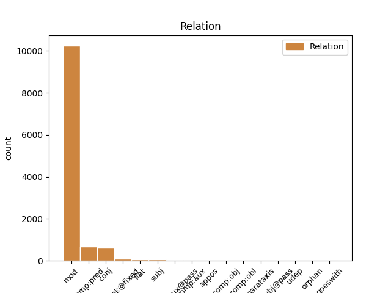
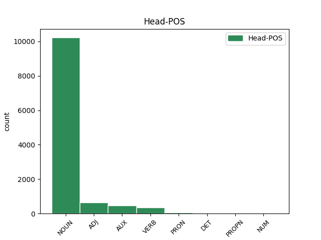
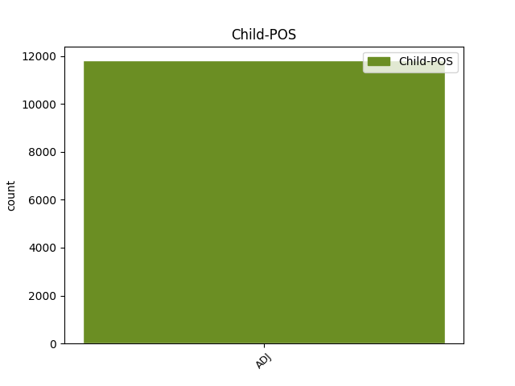

Distribution of features within this leaf



Agreement Rules sorted by frequency.
When the dependent token is None
1 Dacă _ _ _ _ 0 _ _ _
2 V _ _ _ _ 0 _ _ _
3 este _ _ _ _ 0 _ _ _
4 aproape _ _ _ _ 0 _ _ _
5 de _ _ _ _ 0 _ _ _
6 zero _ _ _ _ 0 _ _ _
7 ( _ _ _ _ 0 _ _ _
8 V _ _ _ _ 0 _ _ _
9 < _ _ _ _ 0 _ _ _
10 35% _ _ _ _ 0 _ _ _
11 ) _ _ _ _ 0 _ _ _
12 , _ _ _ _ 0 _ _ _
13 atunci _ _ _ _ 0 _ _ _
14 populația _ _ _ _ 0 _ _ _
15 studiată _ _ _ _ 0 _ _ _
16 statistic _ _ _ _ 0 _ _ _
17 este _ _ _ _ 0 _ _ _
18 omogenă _ _ _ _ 0 _ _ _
19 și _ _ _ _ 0 _ _ _
20 media _ _ _ _ 0 _ _ _
21 m _ _ _ _ 0 _ _ _
22 este fi AUX Vmip3s Mood=Ind|Number=Sing|Person=3|Tense=Pres|VerbForm=Fin 0 _ _ _
23 reprezentativă reprezentativ ADJ Afpfsrn Case=Acc,Nom|Definite=Ind|Degree=Pos|Gender=Fem|Number=Sing 22 comp:pred _ _
24 pentru _ _ _ _ 0 _ _ _
25 această _ _ _ _ 0 _ _ _
26 populație _ _ _ _ 0 _ _ _
27 . _ _ _ _ 0 _ _ _
Disagree Examples:
1 Se _ _ _ _ 0 _ _ _
2 simțea _ _ _ _ 0 _ _ _
3 foarte _ _ _ _ 0 _ _ _
4 tare _ _ _ _ 0 _ _ _
5 atras _ _ _ _ 0 _ _ _
6 de _ _ _ _ 0 _ _ _
7 el _ _ _ _ 0 _ _ _
8 , _ _ _ _ 0 _ _ _
9 nu _ _ _ _ 0 _ _ _
10 numai _ _ _ _ 0 _ _ _
11 fiindcă _ _ _ _ 0 _ _ _
12 era _ _ _ _ 0 _ _ _
13 intrigat _ _ _ _ 0 _ _ _
14 de _ _ _ _ 0 _ _ _
15 contrastul _ _ _ _ 0 _ _ _
16 dintre _ _ _ _ 0 _ _ _
17 aspectul _ _ _ _ 0 _ _ _
18 lui _ _ _ _ 0 _ _ _
19 rafinat _ _ _ _ 0 _ _ _
20 și _ _ _ _ 0 _ _ _
21 fizicul _ _ _ _ 0 _ _ _
22 de _ _ _ _ 0 _ _ _
23 boxer _ _ _ _ 0 _ _ _
24 profesionist _ _ _ _ 0 _ _ _
25 , _ _ _ _ 0 _ _ _
26 ci _ _ _ _ 0 _ _ _
27 mai _ _ _ _ 0 _ _ _
28 degrabă _ _ _ _ 0 _ _ _
29 din _ _ _ _ 0 _ _ _
30 cauza _ _ _ _ 0 _ _ _
31 unei _ _ _ _ 0 _ _ _
32 convingeri _ _ _ _ 0 _ _ _
33 ținute ține VERB Vmp--pf Gender=Fem|Number=Plur|VerbForm=Part 0 _ _ _
34 secretă secret ADJ Afpfsrn Case=Acc,Nom|Definite=Ind|Degree=Pos|Gender=Fem|Number=Sing 33 comp:pred _ _
35 - _ _ _ _ 0 _ _ _
36 sau _ _ _ _ 0 _ _ _
37 poate _ _ _ _ 0 _ _ _
38 nici _ _ _ _ 0 _ _ _
39 măcar _ _ _ _ 0 _ _ _
40 dintr- _ _ _ _ 0 _ _ _
41 o _ _ _ _ 0 _ _ _
42 convingere _ _ _ _ 0 _ _ _
43 , _ _ _ _ 0 _ _ _
44 ci _ _ _ _ 0 _ _ _
45 dintr- _ _ _ _ 0 _ _ _
46 o _ _ _ _ 0 _ _ _
47 speranță _ _ _ _ 0 _ _ _
48 - _ _ _ _ 0 _ _ _
49 și _ _ _ _ 0 _ _ _
50 anume _ _ _ _ 0 _ _ _
51 că _ _ _ _ 0 _ _ _
52 ortodoxia _ _ _ _ 0 _ _ _
53 politică _ _ _ _ 0 _ _ _
54 a _ _ _ _ 0 _ _ _
55 lui _ _ _ _ 0 _ _ _
56 O'Brien _ _ _ _ 0 _ _ _
57 nu _ _ _ _ 0 _ _ _
58 era _ _ _ _ 0 _ _ _
59 perfectă _ _ _ _ 0 _ _ _
60 . _ _ _ _ 0 _ _ _
1 Omul _ _ _ _ 0 _ _ _
2 , _ _ _ _ 0 _ _ _
3 care _ _ _ _ 0 _ _ _
4 se _ _ _ _ 0 _ _ _
5 aruncase arunca VERB Vmil3s Mood=Ind|Number=Sing|Person=3|Tense=Pqp|VerbForm=Fin 0 _ _ _
6 de-a _ _ _ _ 0 _ _ _
7 dreptul _ _ _ _ 0 _ _ _
8 în _ _ _ _ 0 _ _ _
9 genunchi _ _ _ _ 0 _ _ _
10 , _ _ _ _ 0 _ _ _
11 pe _ _ _ _ 0 _ _ _
12 jos _ _ _ _ 0 _ _ _
13 , _ _ _ _ 0 _ _ _
14 cu _ _ _ _ 0 _ _ _
15 mâinile _ _ _ _ 0 _ _ _
16 încleștate încleștat ADJ Afpfp-n Definite=Ind|Degree=Pos|Gender=Fem|Number=Plur 5 mod _ SpaceAfter=No
17 , _ _ _ _ 0 _ _ _
18 strigă _ _ _ _ 0 _ _ _
19 : _ _ _ _ 0 _ _ _
1 Winston _ _ _ _ 0 _ _ _
2 sări _ _ _ _ 0 _ _ _
3 în _ _ _ _ 0 _ _ _
4 poziție _ _ _ _ 0 _ _ _
5 de _ _ _ _ 0 _ _ _
6 drepți _ _ _ _ 0 _ _ _
7 în _ _ _ _ 0 _ _ _
8 fața _ _ _ _ 0 _ _ _
9 tele-ecranului _ _ _ _ 0 _ _ _
10 pe _ _ _ _ 0 _ _ _
11 care _ _ _ _ 0 _ _ _
12 apăruse _ _ _ _ 0 _ _ _
13 deja _ _ _ _ 0 _ _ _
14 imaginea _ _ _ _ 0 _ _ _
15 unei _ _ _ _ 0 _ _ _
16 femei femeie NOUN Ncfson Case=Dat,Gen|Definite=Ind|Gender=Fem|Number=Sing 0 _ _ _
17 destul _ _ _ _ 0 _ _ _
18 de _ _ _ _ 0 _ _ _
19 tinere tânăr ADJ Afpfp-n Definite=Ind|Degree=Pos|Gender=Fem|Number=Plur 16 mod _ SpaceAfter=No
20 , _ _ _ _ 0 _ _ _
21 uscățivă _ _ _ _ 0 _ _ _
22 dar _ _ _ _ 0 _ _ _
23 musculoasă _ _ _ _ 0 _ _ _
24 , _ _ _ _ 0 _ _ _
25 îmbrăcată _ _ _ _ 0 _ _ _
26 în _ _ _ _ 0 _ _ _
27 tunică _ _ _ _ 0 _ _ _
28 și _ _ _ _ 0 _ _ _
29 în _ _ _ _ 0 _ _ _
30 papuci _ _ _ _ 0 _ _ _
31 de _ _ _ _ 0 _ _ _
32 gimnastică _ _ _ _ 0 _ _ _
33 . _ _ _ _ 0 _ _ _
1 Winston _ _ _ _ 0 _ _ _
2 sări _ _ _ _ 0 _ _ _
3 în _ _ _ _ 0 _ _ _
4 poziție _ _ _ _ 0 _ _ _
5 de _ _ _ _ 0 _ _ _
6 drepți _ _ _ _ 0 _ _ _
7 în _ _ _ _ 0 _ _ _
8 fața _ _ _ _ 0 _ _ _
9 tele-ecranului _ _ _ _ 0 _ _ _
10 pe _ _ _ _ 0 _ _ _
11 care _ _ _ _ 0 _ _ _
12 apăruse _ _ _ _ 0 _ _ _
13 deja _ _ _ _ 0 _ _ _
14 imaginea _ _ _ _ 0 _ _ _
15 unei _ _ _ _ 0 _ _ _
16 femei _ _ _ _ 0 _ _ _
17 destul _ _ _ _ 0 _ _ _
18 de _ _ _ _ 0 _ _ _
19 tinere tânăr ADJ Afpfp-n Definite=Ind|Degree=Pos|Gender=Fem|Number=Plur 0 _ _ _
20 , _ _ _ _ 0 _ _ _
21 uscățivă uscățiv ADJ Afpfsrn Case=Acc,Nom|Definite=Ind|Degree=Pos|Gender=Fem|Number=Sing 19 conj _ _
22 dar _ _ _ _ 0 _ _ _
23 musculoasă _ _ _ _ 0 _ _ _
24 , _ _ _ _ 0 _ _ _
25 îmbrăcată _ _ _ _ 0 _ _ _
26 în _ _ _ _ 0 _ _ _
27 tunică _ _ _ _ 0 _ _ _
28 și _ _ _ _ 0 _ _ _
29 în _ _ _ _ 0 _ _ _
30 papuci _ _ _ _ 0 _ _ _
31 de _ _ _ _ 0 _ _ _
32 gimnastică _ _ _ _ 0 _ _ _
33 . _ _ _ _ 0 _ _ _
1 În _ _ _ _ 0 _ _ _
2 nici _ _ _ _ 0 _ _ _
3 o _ _ _ _ 0 _ _ _
4 situație _ _ _ _ 0 _ _ _
5 publică _ _ _ _ 0 _ _ _
6 sau _ _ _ _ 0 _ _ _
7 particulară _ _ _ _ 0 _ _ _
8 nu _ _ _ _ 0 _ _ _
9 se _ _ _ _ 0 _ _ _
10 recunoștea _ _ _ _ 0 _ _ _
11 că _ _ _ _ 0 _ _ _
12 ar _ _ _ _ 0 _ _ _
13 fi _ _ _ _ 0 _ _ _
14 existat _ _ _ _ 0 _ _ _
15 vreun _ _ _ _ 0 _ _ _
16 moment _ _ _ _ 0 _ _ _
17 în _ _ _ _ 0 _ _ _
18 care _ _ _ _ 0 _ _ _
19 cele _ _ _ _ 0 _ _ _
20 trei _ _ _ _ 0 _ _ _
21 puteri _ _ _ _ 0 _ _ _
22 să _ _ _ _ 0 _ _ _
23 fi _ _ _ _ 0 _ _ _
24 fost fi AUX Vmp--sm Gender=Masc|Number=Sing|VerbForm=Part 0 _ _ _
25 altfel _ _ _ _ 0 _ _ _
26 grupate grupat ADJ Afpfp-n Definite=Ind|Degree=Pos|Gender=Fem|Number=Plur 24 comp:pred _ SpaceAfter=No
27 . _ _ _ _ 0 _ _ _